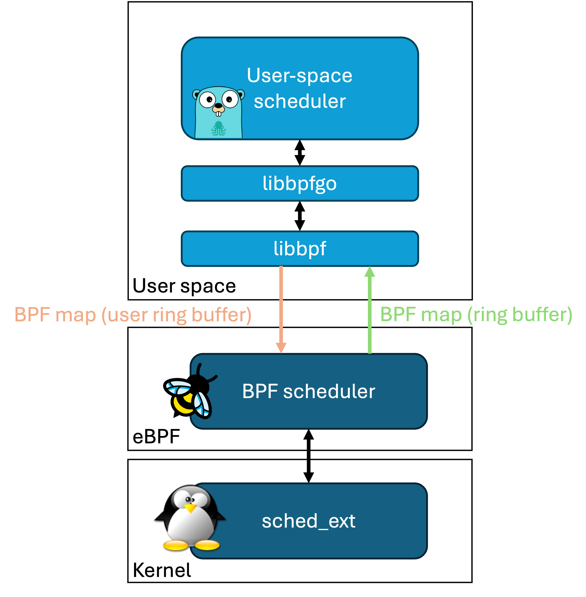
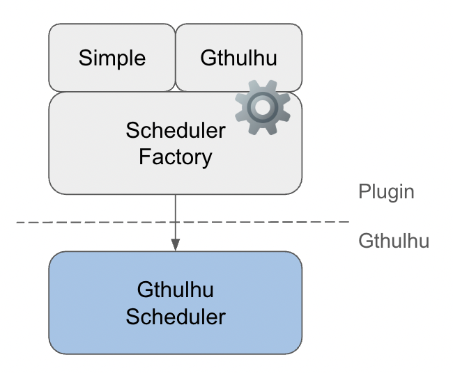

How It Works
This page provides detailed information about the core working principles and technical architecture of Gthulhu and Qumun schedulers.
Overall Architecture
Dual-Component Design
Gthulhu scheduler adopts a modern dual-component architecture:

1. BPF Scheduler
A BPF scheduler implemented based on the Linux kernel's sched_ext framework, responsible for low-level scheduling functions such as task queue management, CPU selection logic, and scheduling execution. The BPF scheduler communicates with the user-space Gthulhu scheduler through two types of eBPF Maps: ring buffer and user ring buffer.
2. Gthulhu (User Space Scheduler)
The Gthulhu scheduler, developed using the qumun framework, receives information about tasks to be scheduled from the ring buffer eBPF Map and makes decisions based on scheduling policies. Finally, the scheduling results are sent back to the BPF Scheduler through the user ring buffer eBPF Map.

The Gthulhu scheduler supports a plugin-based design, allowing developers to extend and customize scheduling policies according to their needs. Gthulhu/plugin currently implements two schedulers:
- Simple Scheduler: A simple scheduler implemented with reference to scx_simple, with core logic of approximately 200 lines.
- Gthulhu Scheduler: A virtual runtime-based scheduler with latency-sensitive optimization and CPU topology-aware features.
CPU Topology-Aware Scheduling
Hierarchical CPU Selection
graph TB
A[Task Needs CPU] --> AA{Single CPU Allowed?}
AA -->|Yes| AB[Check if CPU is Idle]
AA -->|No| B{SMT System?}
AB -->|Idle| AC[Use Previous CPU]
AB -->|Not Idle| AD[Fail with EBUSY]
B -->|Yes| C{Previous CPU Full-Idle Core?}
B -->|No| G{Previous CPU Idle?}
C -->|Yes| D[Use Previous CPU]
C -->|No| E{Full-Idle CPU in L2 Cache?}
E -->|Yes| F[Use CPU in Same L2 Cache]
E -->|No| H{Full-Idle CPU in L3 Cache?}
H -->|Yes| I[Use CPU in Same L3 Cache]
H -->|No| J{Any Full-Idle Core Available?}
J -->|Yes| K[Use Any Full-Idle Core]
J -->|No| G
G -->|Yes| L[Use Previous CPU]
G -->|No| M{Any Idle CPU in L2 Cache?}
M -->|Yes| N[Use CPU in Same L2 Cache]
M -->|No| O{Any Idle CPU in L3 Cache?}
O -->|Yes| P[Use CPU in Same L3 Cache]
O -->|No| Q{Any Idle CPU Available?}
Q -->|Yes| R[Use Any Idle CPU]
Q -->|No| S[Return EBUSY]
API and Scheduling Policy Design
Gthulhu implements a flexible mechanism to dynamically adjust its scheduling behavior through a RESTful API interface. This allows operators to fine-tune the scheduler's performance characteristics without restarting or recompiling the code.
API Architecture
The API server provides endpoints for retrieving and setting scheduling strategies:
graph TB
A[Gthulhu Scheduler] -->|Periodic Requests| B[API Server]
C[Operators/Admins] -->|Configure Strategies| B
B -->|Return Strategies| A
A -->|Apply Strategies| D[Task Scheduling]
subgraph "External Management"
C
end
subgraph "Scheduling System"
A
D
end
API Endpoints
The API server exposes two primary endpoints for scheduling strategy management:
- GET /api/v1/scheduling/strategies: Retrieves current scheduling strategies
- POST /api/v1/scheduling/strategies: Sets new scheduling strategies
Scheduling Strategy Data Model
A scheduling strategy is represented using the following structure:
{
"scheduling": [
{
"priority": true,
"execution_time": 20000000,
"pid": 12345
},
{
"priority": false,
"execution_time": 10000000,
"selectors": [
{
"key": "tier",
"value": "control-plane"
}
]
}
]
}
Key components of a scheduling strategy:
- Priority (
boolean): When true, the task's virtual runtime is set to the minimum value, effectively giving it the highest scheduling priority - Execution Time (
uint64): Custom time slice in nanoseconds for the task - PID (
int): Process ID to which the strategy applies - Selectors (
array): Optional Kubernetes label selectors for targeting groups of processes
Strategy Application Flow
The process of fetching and applying scheduling strategies follows this sequence:
sequenceDiagram
participant S as Scheduler
participant A as API Server
participant T as Task Pool
S->>S: Initialize scheduler
S->>S: Start strategy fetcher
loop Every interval seconds
S->>A: Request current strategies
A->>S: Return strategy list
S->>S: Update strategy map
end
Note over S,T: During task scheduling
T->>S: Task needs scheduling
S->>S: Check if task has custom strategy
S->>S: Apply priority setting if needed
S->>S: Apply custom execution time if specified
S->>T: Schedule task with applied strategy
Kubernetes Integration
For containerized environments, Gthulhu can map scheduling strategies to specific pods using label selectors:
- Label Selector Resolution: The API server translates label selectors into specific PIDs by scanning the system for matching pods
- PID Mapping: Each pod's processes are identified and associated with the appropriate scheduling strategy
- Dynamic Updates: As pods are created, destroyed, or moved, the scheduler adapts by periodically refreshing its strategies
Strategy Prioritization Logic
When applying scheduling strategies, Gthulhu follows these rules:
- Direct PID Match: Strategies that explicitly specify a PID have highest precedence
- Label Selector Match: Strategies using label selectors apply to all matching processes
- Default Behavior: Processes without specific strategies use the standard scheduling algorithm
Configuration Parameters
The strategy fetching behavior can be configured through the scheduler's configuration file:
This architecture allows for dynamic, fine-grained control over scheduling behavior without interrupting the scheduler's operation.
BPF and User Space Communication
Communication Mechanism
sequenceDiagram
participant K as BPF (Kernel Space)
participant U as Go (User Space)
K->>U: Task Creation Event
U->>U: Analyze Task Characteristics
U->>K: Set Scheduling Parameters
K->>K: Apply Scheduling Decision
K->>U: Statistics Update
U->>U: Dynamic Strategy Adjustment
Debugging and Monitoring
BPF Tracing
# Monitor BPF program execution
sudo cat /sys/kernel/debug/tracing/trace_pipe
# Check BPF statistics
sudo bpftool prog show
sudo bpftool map dump name task_info_map
Differences from CFS
| Feature | CFS (Completely Fair Scheduler) | Gthulhu |
|---|---|---|
| Scheduling Policy | Virtual runtime based | Virtual runtime + latency optimization |
| Task Classification | Unified processing | Automatic classification optimization |
| CPU Selection | Basic load balancing | Topology-aware + cache affinity |
| Dynamic Adjustment | Limited | Comprehensive adaptive adjustment |
| Extensibility | Kernel built-in | User-space extensible |
Future Development Directions
- Machine Learning Integration: Use ML models to predict task behavior
- Container-Aware Scheduling: Optimization for containerized environments
- Energy Optimization: Integration of power management considerations
- Real-Time Task Support: Support for hard real-time task scheduling
Deep Dive
For more implementation details, refer to the API Reference and source code comments.